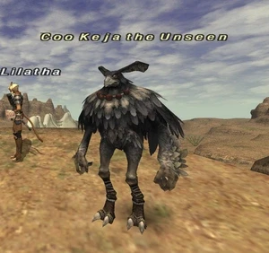
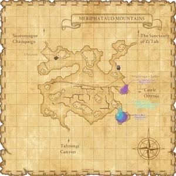

Level 75 reference · Zenith rules
|
Job: Ninja |
 |

| Zone | Level | Drops | Steal | Spawns | Notes | ||||||||
| Meriphataud Mountains | 37 | 1 | A, L, S | ||||||||||
|
HP = Detects Low HP; M = Detects Magic; Sc = Follows by Scent; T(S) = True-sight; T(H) = True-hearing JA = Detects job abilities; WS = Detects weaponskills; Z(D) = Asleep in Daytime; Z(N) = Asleep at Nighttime | |||||||||||||


Notes:
- Spawns approximately every 21 hours near the entrance to Castle Oztroja (K-8); it is not a lottery spawn.
- It has a 30 minute pop window starting at the 21 hour mark.
- Susceptible to all enfeebling spells.
- Uses Mijin Gakure.
- Always has a Yagudo Votary and a Yagudo Theologist following him.
- Killable solo at level 55
- The Ajase Beads are not 100% drop.
Adapted from Eden Wiki: Coo Keja the Unseen · Contributors and history · CC BY-SA 4.0. Revision 46788. Layout, links and optional background text adapted for Zenith.